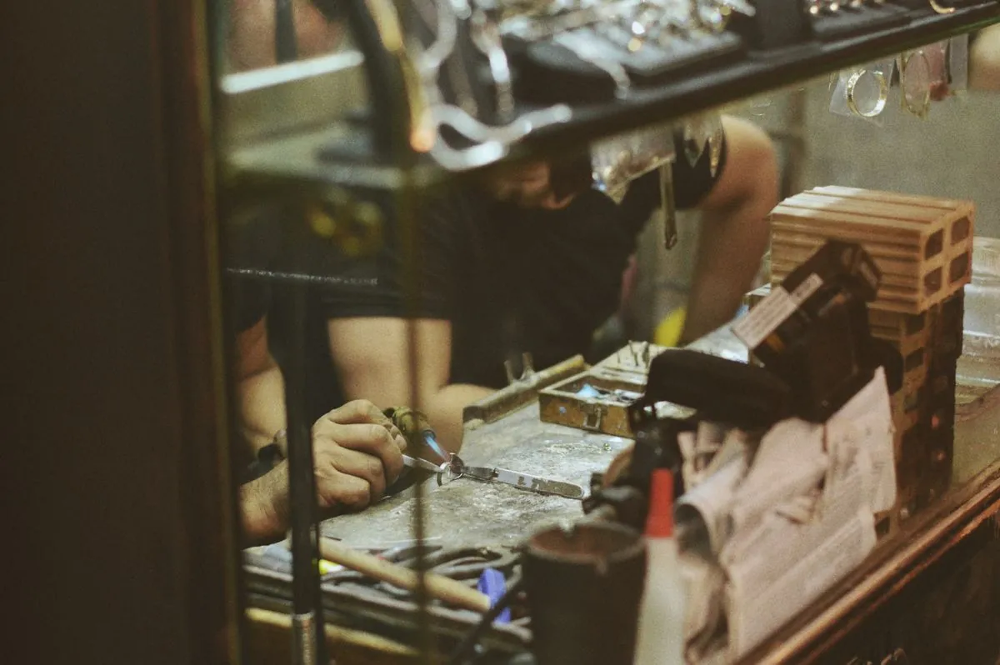
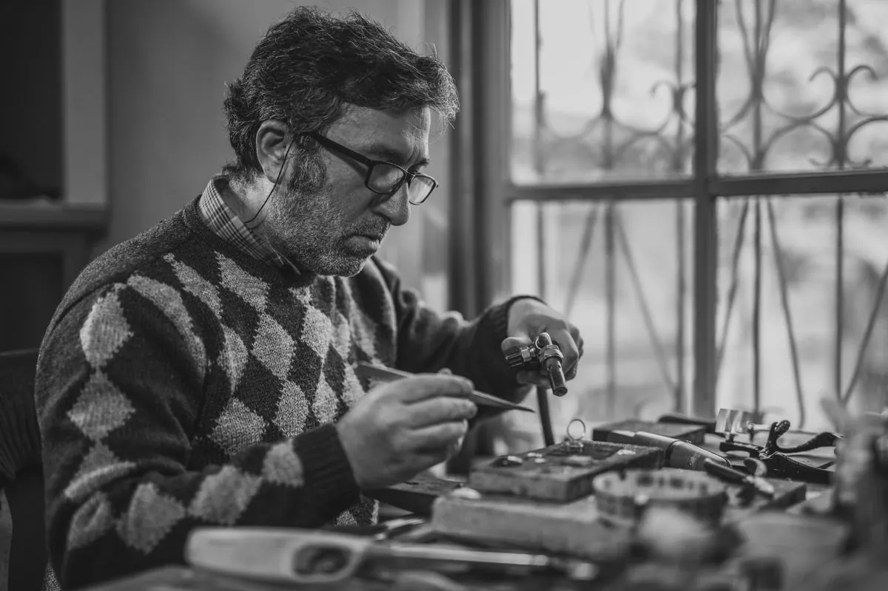
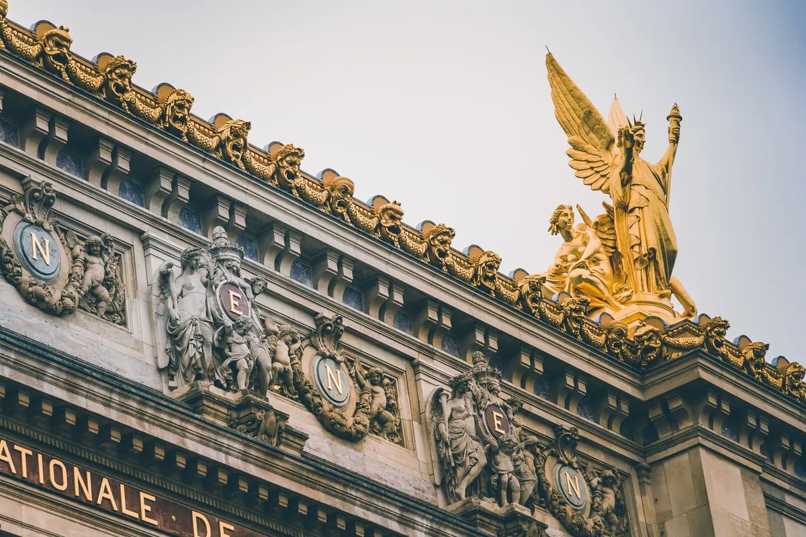
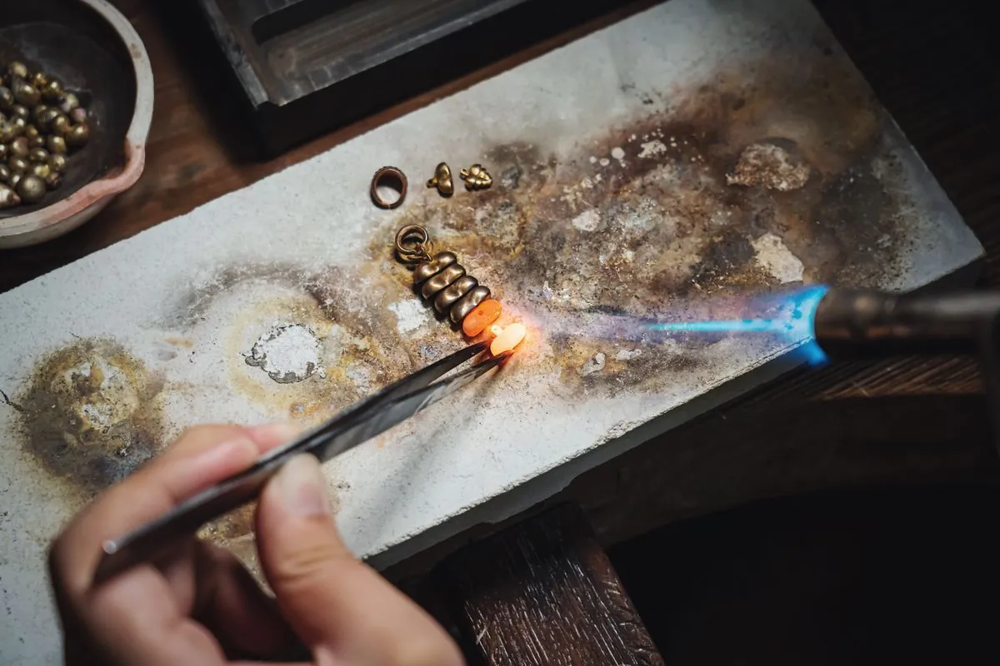
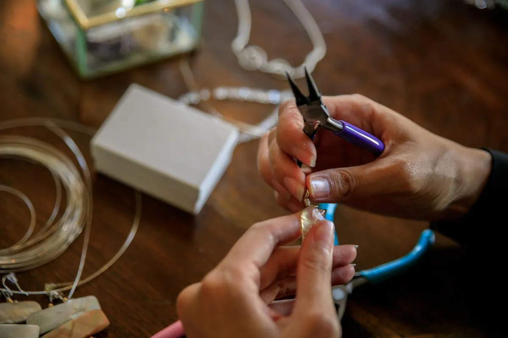
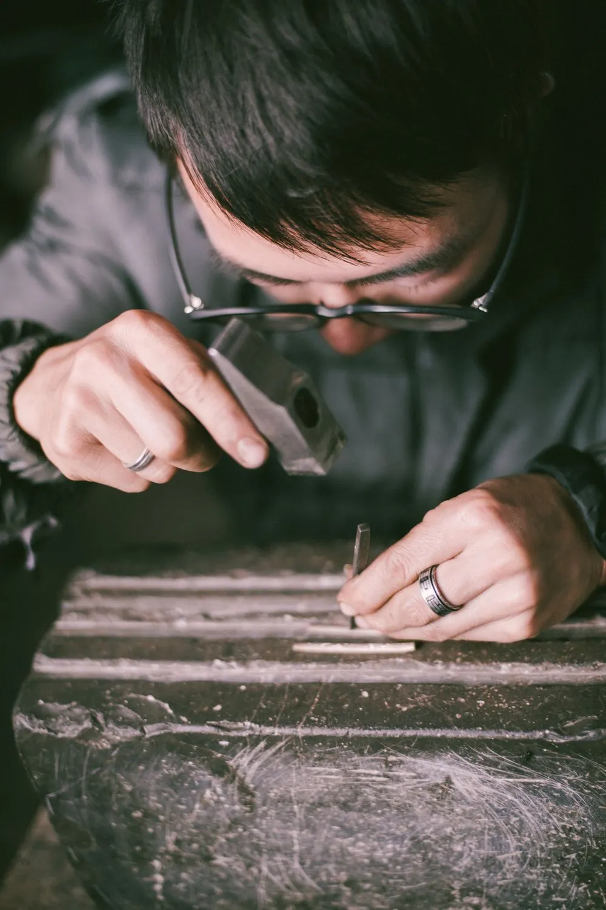
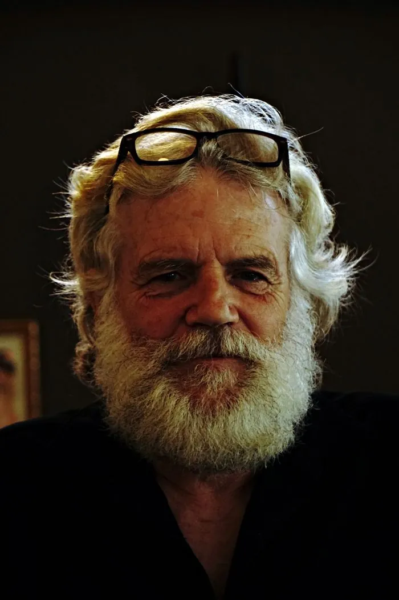

Le dessin
Tout commence au fusain, à la main. La directrice artistique croque chaque pièce trois fois avant de la confier à l’atelier.

L’histoire d’Éclat d’Or commence en 1932, dans une pièce sous les toits du 9e arrondissement. Elle continue chaque matin, au même endroit.
1932 — Les origines
Augustin Lormeau ouvre son atelier avec trois outils et une conviction : on ne vend pas un bijou, on l’accompagne.
Horloger de formation devenu joaillier par amour d’une sertisseuse du Sentier, Lormeau fonde la maison pour réparer les bijoux que les grandes enseignes refusaient. La première commande — une bague à refaire aux dimensions d’une main disparue — définit tout ce qui suivra : la précision, la discrétion, et le respect des objets qui portent déjà une histoire.
Sa fille Marguerite y ajoute la haute joaillerie en 1968 ; son petit-fils, Augustin Lormeau fils, la création sur mesure en 2004. Aujourd’hui, onze artisans se partagent le même plateau que le fondateur, sous la même verrière.

Les grandes dates
Nine décennies résumées en six chapitres — et demain, le vôtre.

Augustin Lormeau ouvre un atelier de réparation au 9, square Vendôme. Premier client : une veuve et la bague de son mari.
La maison présente ses propres modèles — dont la Bague Volute, toujours au catalogue, avec ses volutes burinées main.
Marguerite Lormeau crée le pôle Haute Joaillerie. La manchette Onde naît la même année, en série limitée.
Six nouveaux établis sous verrière. La maison compte sept artisans et forme son premier apprenti.
Augustin fils lance le parcours sur mesure en cinq rendez-vous — le même que celui que vous suivez aujourd’hui sur ce site.
Passage intégral à l’or recyclé certifié et aux diamants d’origine traçable, sans surcoût pour le client.
Le savoir-faire
Une création Éclat d’Or passe entre sept paires de mains avant de rejoindre son écrin. Aucune étape n’est sous-traitée, aucune main n’est interchangeable.
Tout commence au fusain, à la main. La directrice artistique croque chaque pièce trois fois avant de la confier à l’atelier.
La pièce naît en cire sculptée ou imprimée, à l’échelle 1:1. C’est ici que se joue le poids, l’équilibre, le tombé.
L’or recyclé est fondu à 1 064 °C dans notre creuset, puis coulé dans un moule à cire perdue.
Griffes, clos, rail ou grain : chaque pierre est posée sous loupe binoculaire, à la main, au 1/100e de millimètre.
Jusqu’à quatre heures de polissage par pièce, en six passages, pour un miroir qui n’a rien à prouver.
Poinçon de la maison, poinçon d’état, numéro de série : gravés au burin, au fond du jonc ou sous le fermoir.
Chaque pièce rejoint un écrin laqué fabriqué en Anjou, un certificat manuscrit et — si vous le souhaitez — un mot à votre intention.



L’atelier
Onze artisans, un plateau, zéro chaîne de montage. Chaque joaillier suit sa pièce du premier au dernier geste.
Notre atelier est ouvert à la vue : quand vous venez en rendez-vous, vous passez devant les établis. Le flamme étalon du fondeur, la loupe binoculaire du sertisseur, la ponceuse du polisseur — tout est visible, parce que nous n’avons rien à cacher.
Les visages
La personne qui vous reçoit et la main qui sertit votre pierre travaillent à dix mètres l’une de l’autre. C’est notre meilleure garantie.

« Un bijou est la seule chose que l’on achète une fois et qui parle encore après nous. »
À votre tour
Sur mesure, en boutique ou simplement le temps d’un café : la maison vous ouvre ses portes.